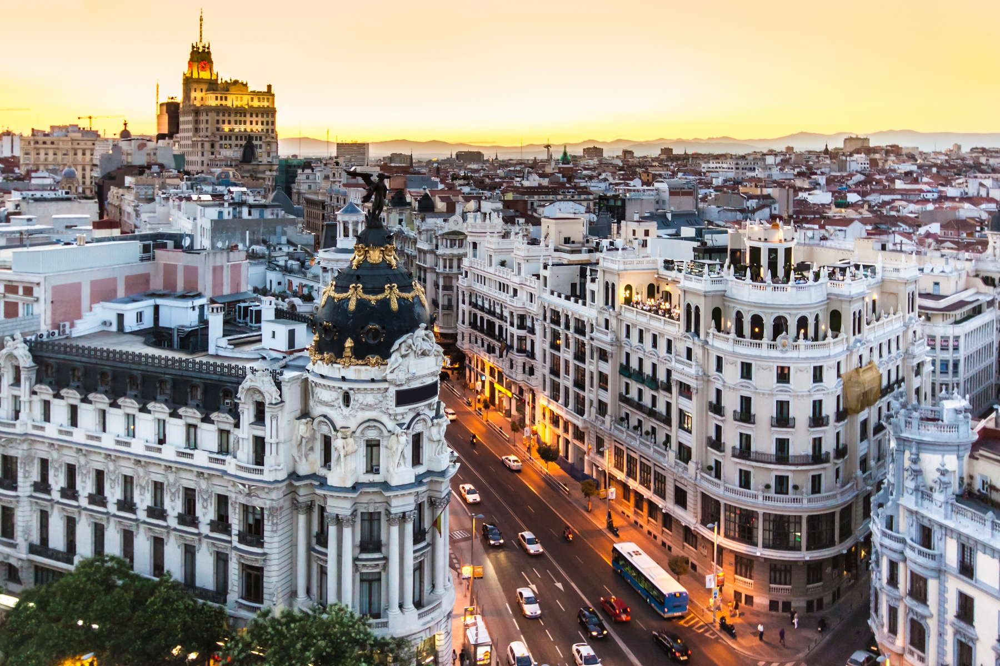
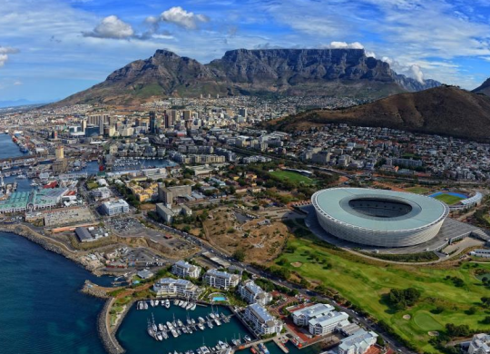
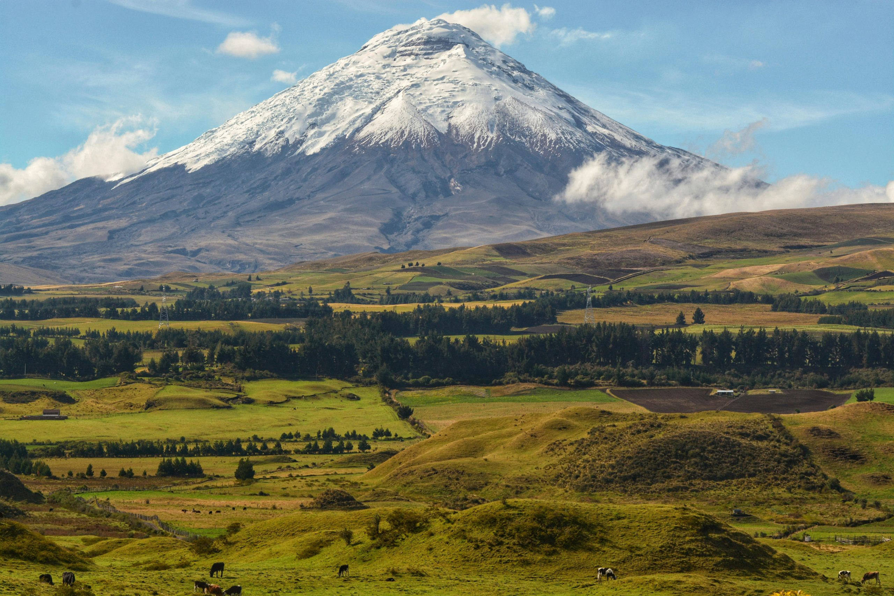
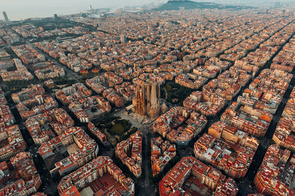
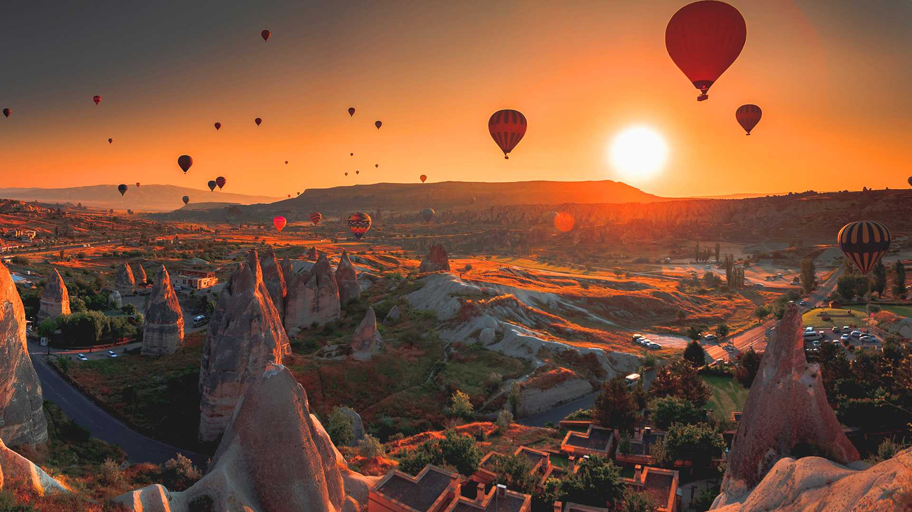
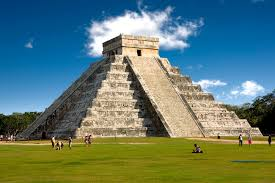

Explora los rincones mas bellos del planeta
Bienvenido a tu guía definitiva para descubrir los lugares mas curiosos de cada continente
Galería Visual
Un recorrido fotográfico por los paisajes más impresionantes de nuestras rutas.






